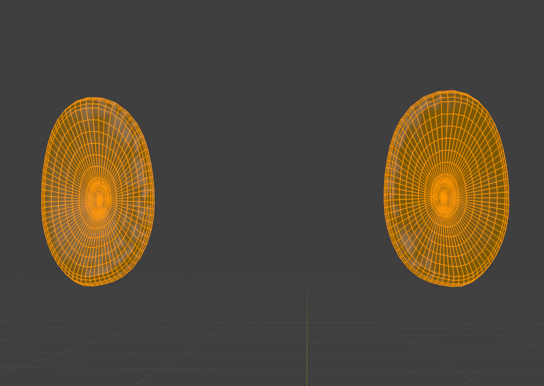
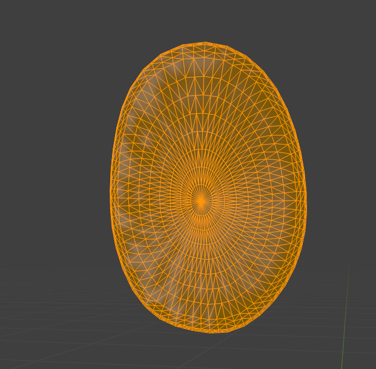
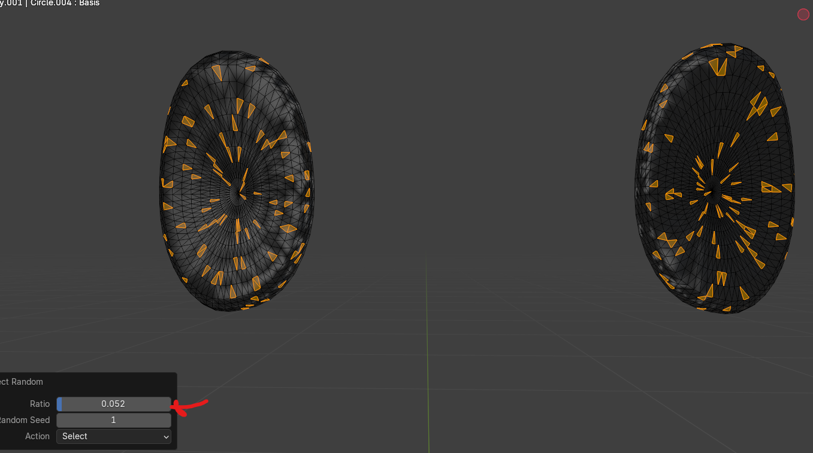
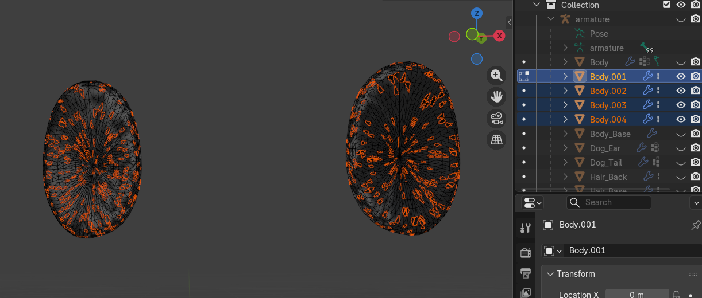
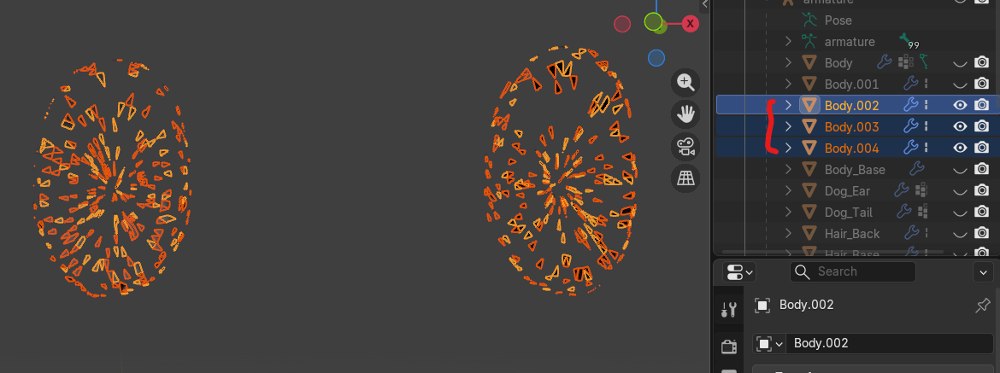
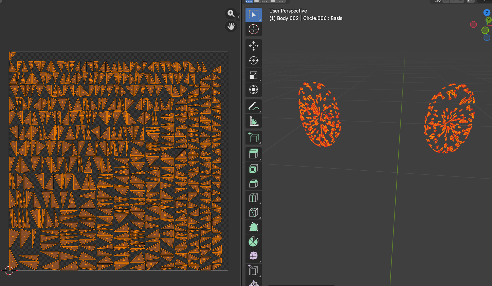
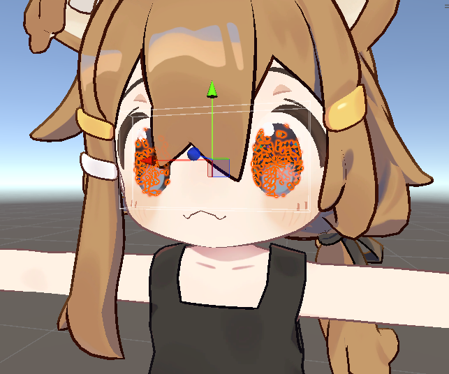
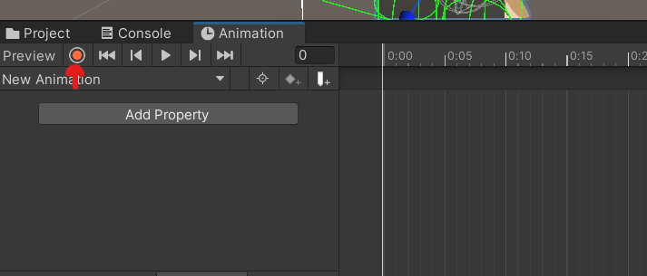
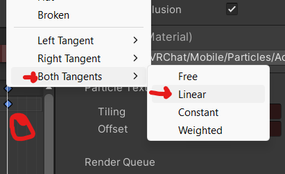

Poi Style Glitter (Blender)

This tutorial was developed by a user on the Discord server, and adapted to text form by Lilyyy__6. The original tutorial is a work in progress video tutorial that may be linked here at a later time.
To start, find the FBX of your model in your unity project. You can find it easily by clicking on the avatar in the scene and clicking on the avatar in the inspector. This will open the fbx in assets.
Import this FBX into blender by clicking File › Import › FBX. Find the FBX in your files by going to the file location where you save your projects, and following the same file path as the file path in assets.

You should see your avatar in the project. Hide everything except the mesh that you want to add glitter to. Then go into edit mode.
Select the parts of the mesh you want to have glitter, and then click shift + d, and then right click. This will duplicate the section of mesh and then reset it's position.

With the duplicated mesh still selected (if you accidentally unselect the section, click ctrl + z to undo) click p and seperate by selection. You can hid the source mesh now and just work with the glitter mesh.
You need to switch to object mode, click on the glitter mesh, and then go back into edit mode to start editing again. After this, click a to select all and right click and select subdivide. Do this to make the faces the size you want the glitter spekles to be.

Once they are the size you want, click ctrl + t to triangulate. This is because VRChat calculates poly counts by triangles, regardless of the actual shape of the face.

Now, you can click off the mesh to unselect it, and go to Select › Select Random. You can adjust the ratio of selection in the bottom left. Click p and seperate by selection. Do this 2 more times.


Go back into object mode, and click on the first layer of glitter. In edit mode, click a to select all, and then alt + s, and hold down shift to slightly scale up the mesh. Only very slightly. Then, click on the second layer and scale it up slightly more. Finally, scale up the third layer a little bit more.
Go into object mode, and then shift click all three layers and then click ctrl + j to join the meshes.

Go back into edit mode, and click a to select all. Then click Edge › Mark Seem. Then, go to Mesh › Split › Faces by Edges.
you can edit the size and orientaion of the induvidual glitter peices by clicking '.' and selecting individual origins. Then, you can scale the pieces and they will all scale induvidually rather than as one big mesh.
Now, click on the glitter in object mode and go into UV Editing mode, at the top.

It should put you in edit mode by default. click a to select all and then click U › Unwrap Angle Based. This should spread out all the triangles on the uv map on the left.

With your cursor on the left side of the view, click '.' and select individual origins again. Then, start to scale down the triangles, and click 0 while scaling. This will set the scale to tiny dots.

Now, all you need to do is name your glitter mesh something like 'glitter' and delete the old mesh you cut the glitter from ( not the original uncut mesh) and your FBX is ready to go back into Unity.
Click File › Export › fbx and then set the scale to FBX All and uncheck leaf bones and Apply Trandforms. These are the most commonly used export settings. It's important to use the same export settings as the original fbx was exported with, so that we can save over the original file location without any problems. When saving, find the fbx in the project folder and save over that location.

Now, go back to your unity project, and your avatar in the scene should have your new glitter mesh. It will need a material.

Right click in assets and select Create › Material.

Change the shader of the material to VRChat › Mobile › Particles › Additive. The texture should be black with some lines or dots in the colors you want the glitter to appear as. My example uses rainbow.

The final step is to animate the texture scrolling and apply the animation to the quest avatar. To start animating, first click on your avatar and click ctrl + d to duplicate it. You can disable the main avatar for now to prevent and animator bugs breaking it.
Click on the duplicate avatar in the hierarchy and then go to the Animaion tab at the bottom. Then click Create to create an animation.

Name the animation and save the animation in a place you can find it later. To start animating, click the record button.

You can record key frames just by changing values on the avatar directly while in record mode. Click on the glitter mesh and set the animation frame to 1:00. In the material, set the texture offset x value to 1.

To make the animation loop smoothly, right click the last frame and click Both Tangents › Linear. Do the same for the first frame.

Disable the duplicate avatar and re-enable the main avatar. Then, in the avatar descriptor, find the FX layer slot and click on it. This will find the FX Controller for you in Assets. Click on it and then click on the Animator tab at the top.

Once in the FX, you can click the + to add a layer, name it glitter, and then click the settings gear to set the layer weight to 1.

Drag in the animation you made to create a state.

Click on the state and set the speed to 0.025. You can change this value to make the glitter faster or slower.